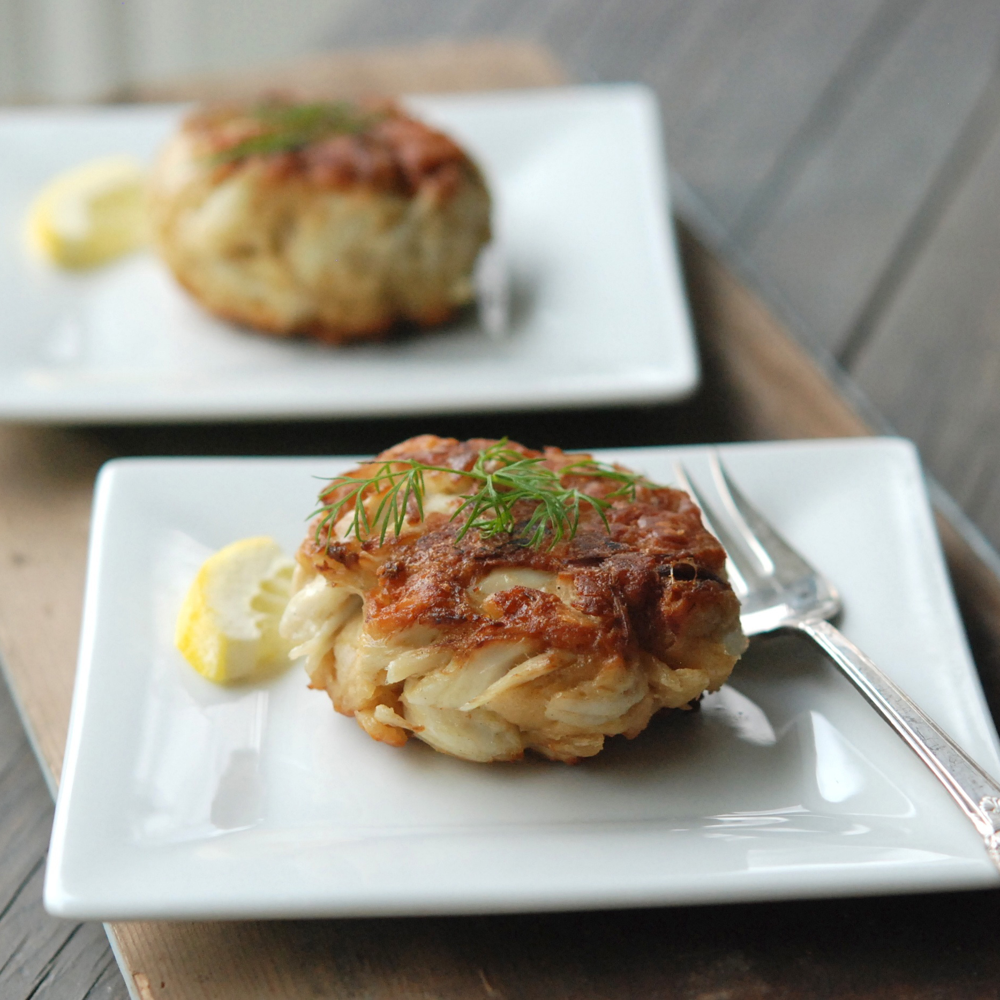
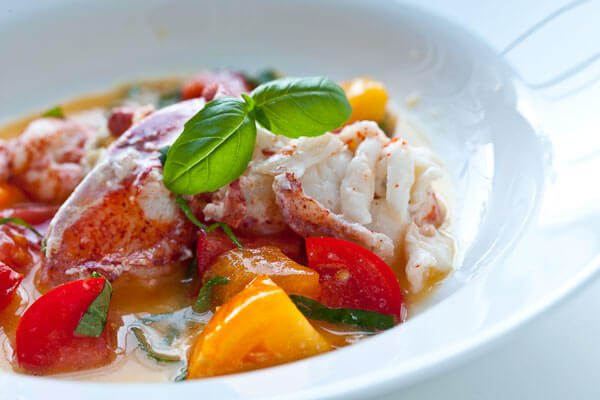
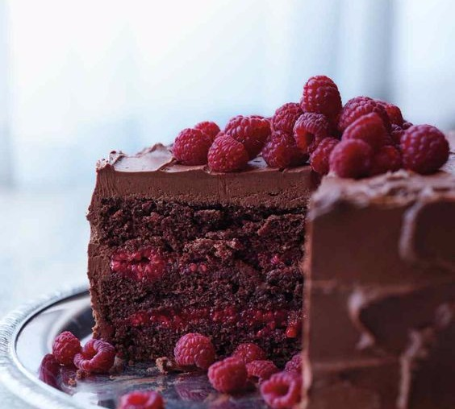

Appetizers
Crab Cakes
Our famous four inch crab meat cake served with lemon-tartar / $10
Shrimp Cocktail
Jumbo shrimp served on ice with a horseradish-lemon cocktail dipping sauce / $10
Calamari
Crispy tempura calamari served with horseradish-lemon cocktail and lemon tartar for dipping / $13
Coconut Shrimp
Jumbo shrimps first rolled in fresh coconut then tempura fried served with a sweet-chili sauce for dipping / $10

Entree
Fish of the Day*
See daily specials. *Market Price / $27
Ahi Tuna Spring Salad
Fresh spring mixed greens, ahi tuna, avocado, pesto / $22
Garlic Lemon Shrimp Scampi
Linguini pasta, white wine lemon-garlic sauce, shrimp, cilantro / $24
Butter Poached Lobster
Butter poached lobster tails and heirloom tomatoes / $25

Dessert
Crème Brûlée*
Rich custard with a fire glazed top, fresh berries picked morning of, vanilla bean ice cream. *Seasonal for berries / $9
Banana Bourbon Bread Pudding
Fresh banana's, Buffalo Trace Stagg Jr. bourbon, cinnamon, and topped with whipped cream and pecans / $18
Quad Layered Chocolate Raspberry Cake
Four layered Ghirardelli dark chocolate cake with raspberry filling / $11
Chocolate Chip Canoli
Gluten Free crisp shell with a cream cheese based chocolate chip filling / $9